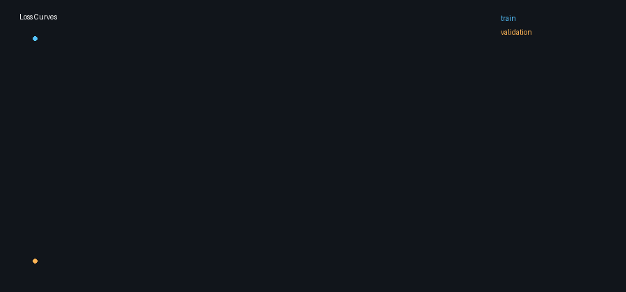

<!doctype html><html lang='zh-CN'><meta charset='utf-8'><meta name='viewport' content='width=device-width'>
<title>Change Teacher Training Dashboard</title><style>body{font:15px system-ui;background:#0c1016;color:#edf2f7;margin:32px}main{max-width:1100px;margin:auto}.grid{display:grid;grid-template-columns:repeat(auto-fit,minmax(220px,1fr));gap:14px}article,table{background:#151b24;border:1px solid #273140;border-radius:12px;padding:18px}th,td{padding:7px;text-align:left}img{max-width:100%;border-radius:10px}a{color:#63c5ff}</style>
<main><h1>变化教师训练仪表板</h1><p>静态离线页面；所有数值来自本次运行文件。</p><div class='grid'><article><h2>combined</h2><p>F1 0.4</p><p>IoU 0.25</p></article></div><h2>Best epoch</h2><table><tr><th>epoch</th><td>0</td></tr><tr><th>train_loss</th><td>1.0</td></tr><tr><th>val_loss</th><td>0.9</td></tr><tr><th>val_binary_f1</th><td>0.4</td></tr><tr><th>learning_rate</th><td>0.001</td></tr><tr><th>stage</th><td>binary</td></tr></table><h2>Curves</h2></main></html>